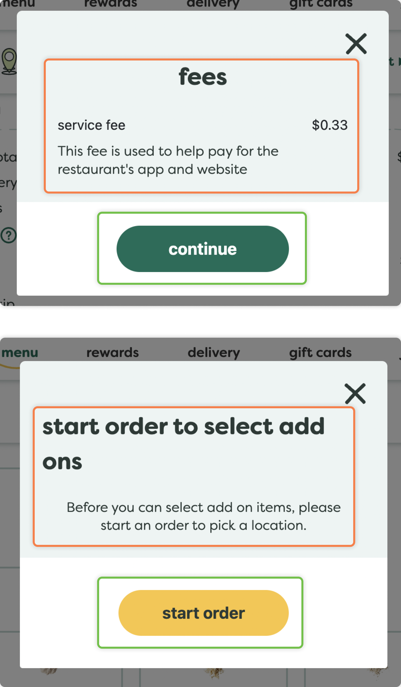
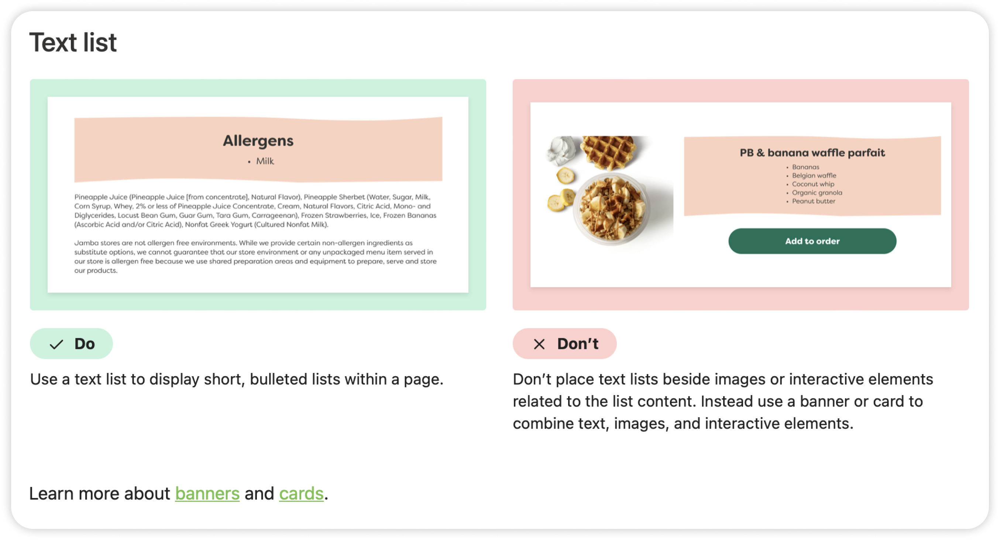

Balancing Effectiveness and Fun in a Design System for Jamba Juice
Jamba Juice is an American smoothie and juice bar chain that promotes wellness and delight through their products and playful branding. We created a design system called JJ (short for Jamba Juice), including a UI kit and documentation website, to improve the consistency and accessibility of Jamba's digital products. As a Jamba product itself, JJ expresses the creativity and delight that are foundational to the brand while also incorporating the usability and flexibility of a powerful design system.
When: September - December 2023
Team: Mary Haws (me), Alexis Li, Keyi Zhang
My Role: standardizing UI elements, creating components, evaluating accessibility, articulating design values, branding, writing documentation, pitching the design system
About Jamba Juice: “Making eating better, easier, and more fun”
Founded in California in 1990, Jamba Juice is a smoothie and juice bar chain. Jamba's mission is to promote wellness and fun while providing fast and reliable service, values which are reflected throughout their brand and products.
The Problem
Why might Jamba Juice need a design system?
Jamba's website and brand foster colorful and cheerful experiences. However, the website contains inconsistencies and accessibility issues, suggesting that the company is not using a design system.
We saw Jamba as a good candidate for a design system that would capture its abundance of fun and colorful elements, while ensuring that they are consistent and accessible.
Our Process
What steps did we take to create a design system?
Step 1 of 4: Creating a UI Inventory
We created a UI inventory of Jamba's website to identify inconsistent and inaccessible patterns
UI elements were collected and categorized
Following the guidance of Brad Frost, we screen-captured every element on the Jamba website, pasted the images onto a Figma board, and categorized them. The categories included: colors, typography, headers, buttons, icons, cards, banners, modals, forms, and more.
We identified inconsistencies to improve standardization
We examined the UI categories for inconsistencies in their elements, while also considering how they could be standardized as components in a system.
One example of an inconsistency occurs in the modals: they had different text alignments (center vs. left) and various button colors (green vs. yellow) with no clear logic motivating those distinctions. We planned for left-aligned text and green primary buttons in all modals of this type.
Standardizing helped streamline our entire process, as we wanted the components in the system to be easy for users to adopt.

We evaluated the accessibility of each element
This final step before building the actual design system ensured that the elements would have a foundation in usability and inclusivity. We checked each component using the WCAG. Considering accessibility upfront saved time and reinforced Jamba's values of wellbeing, inclusivity, and efficiency.
One example of an accessibility issue that we uncovered was the use of different text styles for a single phrase or sentence in banners. The difference is jarring since it mixes a thin, handwritten font with a bold, sans-serif font.
Planning to fix this issue and others in our system ensured that accessibility would be built into to our system.
Step 2 of 4: Defining Brand & Values
Our design system needed a name and a set of values to start coming to life
Embracing the Jamba brand would help our system feel like a Jamba product
As a (hypothetical) product of Jamba Juice, we wanted our design system to closely align with the company brand and values. We explored the brand to better represent the voice, product, and essence of Jamba.
We named our system “JJ,” short for Jamba Juice and its playful brand
Choosing a human name helped make our design system feel uniquely personified, and allowed us to embrace the fun side of Jamba. JJ was then ready to come to life through design values, a UI kit, and documentation.
JJ's values combine Jamba's mission with our team's personal design principles
We built a UI kit of reusable styles, tokens, and components
Creating a color palette and color tokens meets the needs of designers and developers
Our UI inventory included all the colors on Jamba's website, which we used to create color ramps for 5 hues with 7 levels of tints and shades. We matched the color variation on the website as closely as possible during this process.
With Jamba's brand colors defined, we devised a color token system for JJ, through which colors could be efficiently managed by designers and integrated by developers. We structured the color tokens in 3 levels:
Level 1 captures the 35 brand colors with their hex codes
Level 2 contains the colors used in the site, referencing their Level 1 values
Level 3 defines the colors used for each type of element using semantic token labels, and referencing their Level 2 values
JJ has a total of 107 color tokens that allow for flexible customization and collaboration. Read more about JJ's color palette and token system in the documentation.
We built flexible components that work seamlessly together
To make JJ as effective and efficient as possible, we utilized properties, variants, instance swapping, and auto layout in Figma. This allowed us to make components that are modular, nested, and fit together in a variety of ways.
An example of a flexible component in JJ is the slot. Slots make up forms, which can be contained in other components like full page modals. This nesting of the slot component means that, when using a full page modal, a designer also uses the form component, slot components, and any other component of their choice when the slot is swapped.
See JJ's nested components in action:
Similar techniques for seamless customization were applied to all of JJ's components whenever possible. Open the JJ UI Kit in Figma to explore all 25 components and 222 variants.
Integrating Jamba's images into the UI kit maximized the fun and flexibility of the components
Images illustrate the fun brand, products, and services on Jamba's website. So, the images also play a crucial part in the components we built.
269 images are integrated into the UI kit as components and variants. Designers simply have to swap the image built into a component with another variant to quickly create colorful mockups and prototypes. Explore images in the JJ UI Kit. Explore images in the JJ UI Kit.
See JJ's images in action:
Testing the UI kit with other designers helped improve its usability
When our UI kit was ready, we published it to the Figma community for other designers (our classmates and professor) to test and give feedback. We observed as they used the kit to build a page from Jamba's website, noting what was easy or difficult to use.
We found that users didn't know what frame size to use, and how to ensure they were spacing components properly. To fix this issue, we added clearer layout guidelines to the kit, and a prepared frame for them to use.
We also received positive feedback about the usability of JJ's UI kit:
“Using your system is straightforward and easy, and the way you defined your components with properties and variants is intuitive and effective."
Step 4 of 4: Writing Documentation
We aimed to write documentation for JJ that was both straightforward and fun
We applied systems thinking to document how JJ works
To ensure the effectiveness of JJ, the documentation needed to include governance policies, support, and accessibility, in addition to usage guidelines for each component in the UI kit. Because we used ZeroHeight to host our documentation site, we were also able to integrate design assets and relate them to their guidelines.
The documentation is a concise but interconnected system. For example, component descriptions are shown alongside subcomponents, and guidelines direct users to alternative approaches.

Fun but clear language was incorporated into JJ's documentation
With delight as a design value and integral part of Jamba's products, we wondered: how do you make design system documentation fun? Documentation should be clear, concise, and usable. We knew JJ's documentation should also be fun, without any unnecessary flairs that would slow users down.
We created a simple system to describe a component's specs and usage that balances clarity and fun:
Ingredient = a component used in other component
Flavor = a type of component
Recipe = a set of guidelines for using a component
We pitched JJ to showcase its built-in flexibility and fun
To make our pitch as engaging and convincing as possible, we brought the personified JJ to life. Our pitch focused on answering questions that designers and developers might have about JJ:
Who is JJ?
Why should I work with JJ?
Is JJ difficult to work with?
What if I have trouble working with JJ?
What's so special about JJ?
We emphasized the features that make JJ uniquely valuable to work with: JJ incorporates dynamic colors, built-in accessibility, customizable components, a large image stock, and thorough guidelines into a single source of truth and creativity for Jamba Juice. Most importantly, JJ creates a delightful experience that is foundational to all things Jamba.
The pitch, including a live demo of the UI kit and documentation, was well-received by our audience (our classmates and professor). Open our pitch deck to see how we answered the above questions.
What are the next steps for JJ?
The next update to JJ would be to make the components responsive. This would include evaluating how the site currently handles responsiveness, updating or adding components in the UI kit, and specifying guidelines for responsiveness on the documentation site.
"The great problem that has to be solved, is the matter of relating everything in the picture, even the smallest details, to the overall harmony." - Camille Pissarro